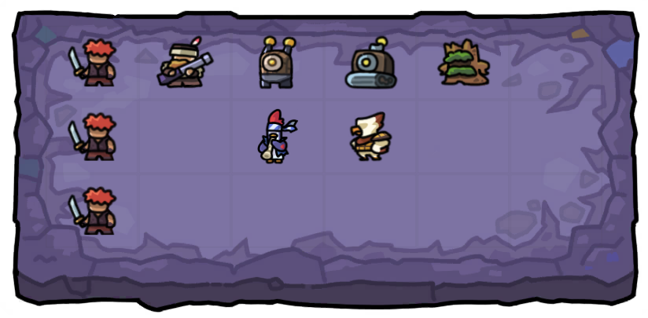
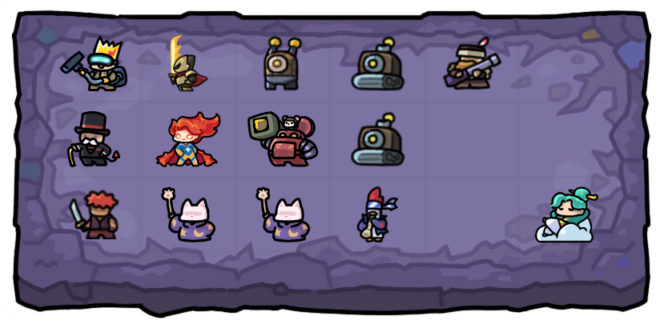

Intro
Hell mode is the next difficulty after Hard and it is a very big jump from the previous mode. In this mode there is no dungeon which means less space for summoning units. Bosses are much harder to kill and special bosses appear at waves 30, 60 and 80. The special bosses which can appear are:
- Night Shaman
- Coldest
- Magician
- Reaper
- Doctor
- Meat
- Barrier
- Grunt
- Kitty Sorceror
- Worm
For a detailed guide about bosses and what they do, see our boss guide here.
The total damage you need to deal to clear Hell is 10x (130 trillion) the damage needed to clear Hard (13 trillion). That should give you an idea of how much stronger you have to be to clear Hell.
Recommended Levels
Lance 12
(Minimum) Without Lance 12, you need to either have higher sb (sb7+) to attempt Hell or multiple immortals that you know how to consistently summon to keep up in the late-game to make any meaningful contribution to killing bosses.
(Recommended) Still Lance 12. There’s no need to level Lance beyond level 12. Separately, it would be beneficial to get Lance’s exclusive treasure to save on the luck stones needed to max Lance’s Flame (increase hp % damage) passive skill.
Artifacts (SB/MG 5+/5+)
(Minimum) At minimum your Safe Box artifact has to be level 5+ in order to have any chance of accumulating enough coins for your DPS to deal sufficient damage in the late-game or to spam summons to get enough Lances and Kitties out. Even at sb5 you will be relying almost exclusively on Lance 12 to be able to kill bosses. Reaper Dian can kill bosses in Hell but not if you ruin your economy to summon him.
Money Gun level 5+ is for your DPS to be able to keep up with the scaling of health of the enemy waves and bosses.
(Recommended) Ideally you should be sb/mg 6/6 which enables you to more consistently accumulate enough coins and for the mg ATK boost to be better for your DPS to deal sufficient damage for the late-game. The higher your Luck Stone artifact, the more consistent your early game becomes as you get more luck stones from completing early missions to do epic roulette summons.
Epics 12+
(Minimum) Your epic guardians are going to be your primary damage dealers in the early game. In order for them to deal sufficient damage to stay alive early on, you need them to at least be level 12. Even at level 12 you may need to upgrade epic damage level in-game to keep up with the increasing mob hp.
(Recommended) Ideally all your epic guardians should be at level 15 before you attempt Hell.
Early Waves (W1-20)
Missions have changed
The mission list in Hell is slightly different from the Hard mission list. Notably the following missions are not in Hell:
- Blacksmith (Upgrade 2x)
- Collect 10 Luck Stones
- Collect 1,000 coins
The following missions are made harder:
- Sell 10 Guardians (up from 5)
- Successfully hunt Golem before W8 (was W10 in Hard)
There is only 1 new mission (Flashback), which is coming back from having 99 enemies on the board. Due to this new mission, the optimal start to the game is to clear this mission immediately at the beginning. Wait for mobs to reach a number of 90-97(units have to pass 99) to start spamming summons. When exactly to start summoning depends on the level of your common and rare units. If they are maxed at 15, you can start at 95-97. If they are low level, you probably want to start summoning at 90 to avoid dying from having too many mobs on the field.
The Golem Hunt mission is a lot harder to accomplish now since it has to be done before W8. Considering the first golem is summoned mid-W6 at earliest and the golems take a bit of time to walk to the middle, you need substantial firepower to take down the golems in time. It is recommended for at least 4 epics combined between your teammate and you to kill the golems in time.
If you didn’t get any, try merging units and selling all Rares you don’t need. Otherwise, upgrade epic damage level to make up quantity with quality.
Bandits are still the core of your coin economy
There’s no escaping it, you still need to summon Bandits early to get your coin economy going. The difference is you no longer have a Dungeon to throw your Bandits into to be attacking 24/7. You have to manage the positioning of your units to maximise the amount of time your Bandits are attacking. That means your stronger units should not be killing mobs before they can reach your Bandits.
The board below is a suggested way to arrange your Bandits and damage dealers to avoid disrupting your Bandits at least until W20. Beyond W20 the mobs will have more than enough health that you can move your epic guardians closer to the left. Mythic DPS should be kept behind (ie. column 4 or 5) until after W30.
Penguin Musician is recommended to boost the attack speed of your Bandits with its active skill (10% chance to increase ATK SPD by 20% for 3s) to farm coins more quickly and also benefits your DPSes. If you use Penguin, keep it at level 1. Penguin does not need to be levelled up.
Remember to move your ranged DPSes forward for the first golem kill mission. Otherwise you risk not being able to kill the golems before W8.
Similar to Hard, once you’ve summoned 6 Bandits or hit 60-80 summon cost you will want to stop summoning with coins to start letting your sb do its work.
Epics hold the fort while you are trying for a DPS mythic
There is no 10 luck stone mission. So all your early luck stones should go into epic roulette summoning (unless you have Grand Mama, then summon her, a Kitty or two and boost Mythic damage a few times).
There will be games where you are just unlucky on epic roulette and need to survive longer using epics. This will only work until max W29. By the W30 boss, you must have a DPS mythic. Even the W20 boss can be problematic if you don’t have enough epics or epic damage upgrades.
With that pressure, there will also be the temptation to merge Electro Robots when you get a full stack. Do not do that as stuns are just as important for survival. If you have 5+ Electro Robots though, you can consider to merge a 3x stack to try for a DPS mythic. A lack of stuns is guaranteed to lose you the game.
Keep your Electro Robots and Shock Robots unless you have at least 3x Electro Robots and 3x Shock Robots remaining after merging. By late-game, you should ideally have 3x Electro Robots and 6x Shock Robots.
If you struggle with damage in early waves, you may want to increase Epic damage to level 2-4.
Mid Waves (W21-55)
The mid-game is where you start to see the difference from Hard. Instead of a Dungeon to take down, you have to start planning for special bosses. It is also important to differentiate between wave clear DPS and boss killer DPS. You will need boss killers to beat Hell at least until you hit sb7. For more info, see our other hell guide.
At this point in the game you should have at least 1-2 DPSes and a proper stun setup just like the other modes. See our stun guide here.
Managing Special Bosses
For 2x speed users, it is highly recommended to remove 2x speed before the special boss waves (W30/W60/W80), so you have more time to react. Especially for Reaper, Magician and Night Shaman. Even if you think you can time it correctly, you may get your teammate’s board destroyed. So do the sensible thing and turn off 2x before special bosses.
For a detailed guide about bosses and what they do, see our list of all the bosses. but we will still highlight certain bosses which tend to be more problematic.
Night Shaman
Draws a magic circle on random spaces, and instantly mutates the unit in those spaces into another random unit. The mutation is chosen from the same rarity of the original unit. This boss can mess up your carefully built board, especially if it appears at W60 or W80.
The mutation happens too quickly to always escape it but you can try to save your two most important units by swapping them from opposite ends of the board 1s after the Night Shaman spawns with the red ring. Even that is not guaranteed as they will still get mutated if they are passing over a space targeted by the Night Shaman when the mutation happens.
Note that immortal units are immune to Night Shaman’s mutation.
Grim Reaper / Magician
Grim Reaper: A red circle will be displayed on several random units, and after a few seconds the units on those squares will be destroyed.Magician: Magician: Red warning = cast red circle on 9 random squares, and after a few seconds, a meteor will rain down on the unit(s) in that square and destroy it. Green warning = periodically selfheal and recover its own HP.
These bosses will kill your units, including immortal guardians. You will have a few seconds to move your units away from the red circled spots after they appear so be vigilant. During the late-game, you may have too full a board to save all your units. In which case, plan for which units you will sacrifice when the time comes.
Barrier
Has low hp but has a shield equal to 10x its hp. Skills dealing damage based on a percentage of enemy total hp deal no damage to the shield.
This boss is a direct counter to Lance’s HP % damage skill. If you encounter this boss and both your teammate and you are relying on Lances, you cannot beat it. It tends to have lower overall health than the other bosses though so you might be able to beat it still with sufficient wave clear DPSes.
Is it time to spend your coins?
To answer this question, you have to know your desired end state. At the end-game, you’re aiming for 700k+ coins (ideally 800k+), mythic level 14+ and 4-6 DPS (with at least 2 boss killers). If you don’t have sufficient luck stone income from Monos or Indy to reach mythic level 14+, you will need to coin summon on maxed summon level to get units to sell for luck stones. If you don’t have enough DPSes, you will also need to coin summon to get legendaries (either by luck or through merging epics) to get more DPSes.
At sb5, realistically you won't be able to reach the desired end state. Hence sb5 in Hell is primarily dependent on Lance 12 for boss killing with full stun setup, 4+ Kitties for support, Awakened Hailey and 1-2 wave clear DPS. You still want to have at least 400-500k coins at the end. Don't burn all your coins.
If you’ve managed to save 40k coins by W40, you’re doing fairly alright but don’t spend your coins just yet. If your coin total is lower than 40k coins at W40, you want to try to postpone your summoning as late as possible to let sb grow your coin stash a little more.
If you want to start maxing your Hailey’s Star Power or you need a bit more firepower for W50, you can plan to max your summon level and start summoning a few waves before (ie. W46+). Hopefully you have 60k-80k coins before you start spending.
You’ll have to assess whether you need to summon to beat the W50 boss depending on your teammate’s and your board. But you will have to be fully prepared for W60 as that’s late-game and you cannot survive if your board isn’t ready. Hence you have to be ready to start summoning a few waves before W60 at latest.
Build up your supports
DPS alone is not enough. Your DPSes need their supports to function optimally. That’s MP Regen for MP-based ult-dependent DPSes, DEF reduction for physical DPSes, and attack speed for all DPSes.
MP regen: Lance, Hailey (especially when trying to summon Awakened Hailey) and Monos benefit heavily from MP Regen. Reaper Dian and Tao both also benefit from MP Regen but not significantly.
DEF reduction: Target 220+ DR by W80 for your Physical DPSes to boost your physical damage output. If you have Ato and/or Orc Shaman built up, their skills also boost physical damage.
Attack speed : The more the better. But make sure you don’t burn too much coin and lose excessive mg ATK boost just to get a few more % of attack speed increase. Ideally 50% ASI and Penguin but potentially much more with Indy.
Hell Mode Builds
For more detailed pre-match preparation, you can view these two guides about Hell Mode Builds:
Late Waves (W56-80)
Before W70, you should aim to have on the board:
- 2-3 Boss Killers
- 2+ Wave Clears
- 1 Hailey, ideally in immortal form or at least at 10 Star Power waiting for RNG on immortal summon condition
- 2-3 Kitty Mages (4+ if running Lance & Awakened Hailey strat)
- Ideally 1 Watt (more than 200+ stacks)
- 200k coins
- Mythic damage upgrade 10+
If not, consider to roll Lucky Stones or max summon level and do some coin summons for more Mythic units. After your board is finished, you can put all surplus Lucky Stones you get to Legendary/Mythic damage level up.
Aim for Mythic damage upgrade 14+ by W80. For coins, aim 400-500k for sb5 or 700-800k+ for sb6+. That said, if you don’t have enough DPSes out, keep summoning for them. 3 DPSes vs 2 is a 50% increase. 4 DPSes vs 3 is a 33% increase. You want at least 4 DPSes (with 2 boss killers) in the late game.
Attack speed increase of at least +30-50% is good to have. Coupled with Penguin's active skill, it will boost your DPS significantly.
Another special boss at W60
Be very careful of the W60 boss. If it is a Night Shaman, Grim Reaper or Magician, it stands the chance of ruining your board such that you can't deal with the W70 and W80 bosses. Remember to swap your guardians away from the target zones for Grim Reaper and Magician. Choose which units will have to be sacrificed if there isn't enough space.
Fill out your support board
DPS is important but support multiplies your DPS. Get the attack speed increase, MP Regen, DEF reduction or Atos that you need to help your DPS do their job better. Some people leave their Bandits till late (W65-70). That’s an option but make sure to merge them by W70 to have time to fill up your unit capacity with supports.
Mythic-specific tips
Stack Watt (250+ energy) until you get to the final boss and pop his ult to clear it more easily, that’s the main reason Watt is so useful in Hell. If you struggle in the final stages of the game, you can pop him even earlier, but it is not preferable since all those stacks would go away (unless you have his exclusive Treasure) and even then it is usually not worth it to trigger Watt early.
Lance’s Flame passive skill should be maxed by the end of the game. If you struggle with Lucky Stones to max your Lance(s), summon units on maxed summon upgrade to sell for stones to max your Lance(s). It is that important.
Hailey should have max Star Power (10/10) and preferably Awakened Hailey form. If you do not have Awakened Hailey, summon maximum 1 Hailey and summon Lances instead with your remaining Sheriffs.
W80: The final boss
Unlike the W30 and W60 special bosses, the special boss you get on W80 is unknown to you until it appears on the board. And the final boss can be different for each side. It is absolutely possible for a W80 Night Shaman, Grim Reaper or Magician to wreck your board so be vigilant and follow the same precautions you have done for the W30 and W60 bosses. A reminder that immortal guardians are immune to the effects of Night Shaman so you can focus on saving your mythic guardians instead.
Make sure your board is ready to trap the two bosses in the midlane and keep them stunlocked so they won't trigger their special a second time. If you are using Watt, remember to trigger his ult. If you're using Lances, make sure to have them next to where the bosses are stunned, with your Kitty Mages below them.
Hope all the above advice helps you to be able to clear Hell for the first time or more consistently than before!
Epilogue: What about immortals?
Immortals can be as strong as 2-3 mythics of the same role (boss killer, wave clear, support). However, bear in mind that immortals have their own in-game summon conditions which can be difficult to attain consistently. You can count your summoned immortals as multiples of the required roles they can fulfil in the endgame board, but the required roles do not change.